Life Sciences Model United Nations
Age of Consequences
When science meets diplomacy
The theme
What "Age of Consequences" means.
The period we are living in now — the point at which the effects of a century of decisions stopped being predictions and became conditions.
None of it was an accident. Antimicrobial resistance was farmed into existence, microplastics were manufactured and discarded on purpose, emissions targets were signed by people who understood the arithmetic.
Life sciences is the field that measures the damage first — but the decisions that follow are made in rooms of diplomats, not laboratories. LSCMUN 2026 puts delegates in those rooms, where every agenda asks the same question: given what we know, what is anyone obliged to do about it?
- Expected delegates
- 200–300
- Councils
- 9
- Days of debate
- 2
- Per council
- 20–30
Why this conference exists
The SDGs are the spine, not the decoration.
Every council and every agenda at LSCMUN is designed against one or more of the United Nations Sustainable Development Goals. Public health in WHO, climate policy in UNFCCC, biodiversity in WCC, international security in UNSC — each committee takes a real-world challenge that needs collaboration, scientific literacy and workable policy at the same time.
Tying the debate to the SDGs is what stops it becoming theoretical. Delegates are asked for practical, sustainable answers that reflect what the life sciences actually contribute to a healthier and safer world.
A life sciences degree, applied.
A Life Sciences course builds a strong scientific foundation. An MUN builds everything that sits alongside it — communication, research, critical thinking, teamwork, leadership and problem-solving.
It is also where students find out how their subject meets the rest of the world: global health, biotechnology, environmental sustainability, bioethics and public policy. That exposure is what makes the difference in research, healthcare, industry and every interdisciplinary field after graduation.
The councils
Nine rooms, one question each.
All councils and agendas
Everyone starts somewhere. Yours starts here.
Chairperson applications are open now. Delegate, press, security and runner registration will open later — no prior MUN experience is required when they do.